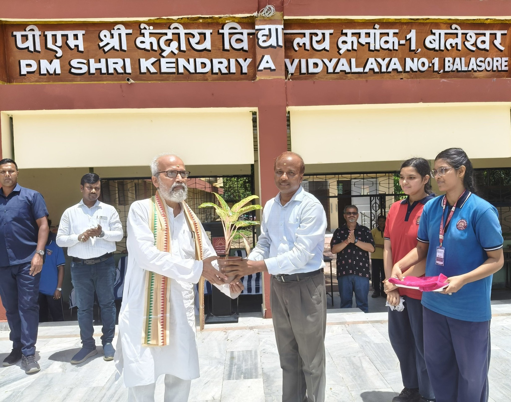
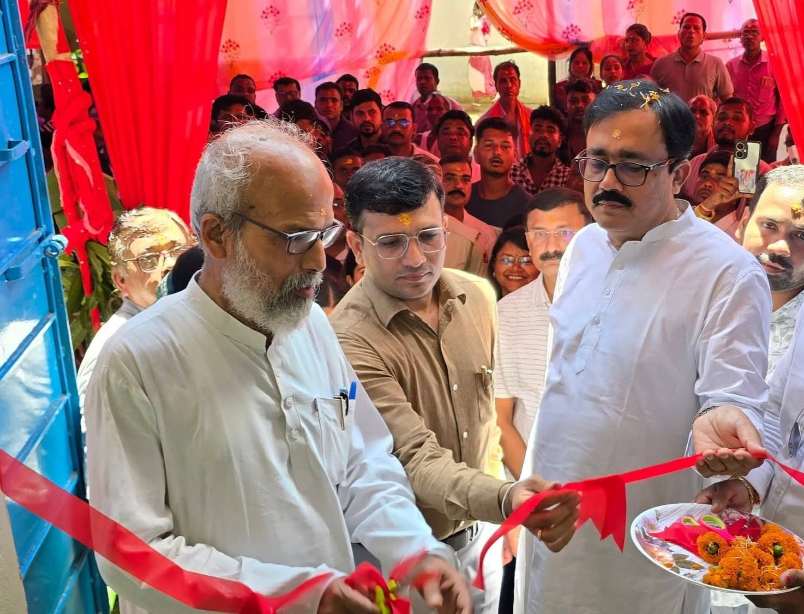
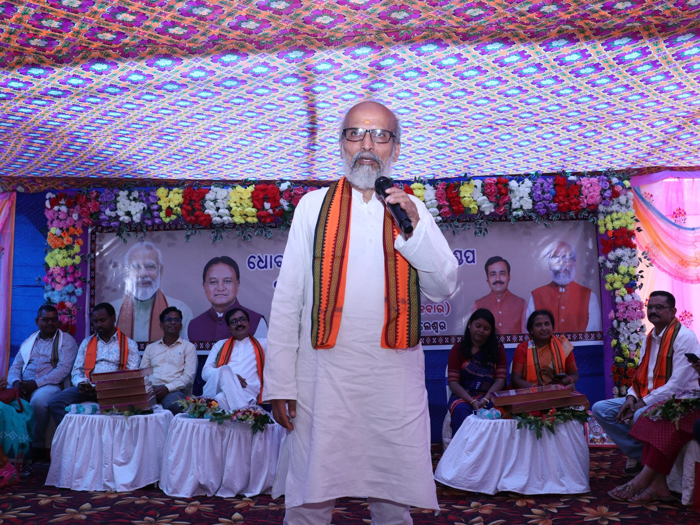
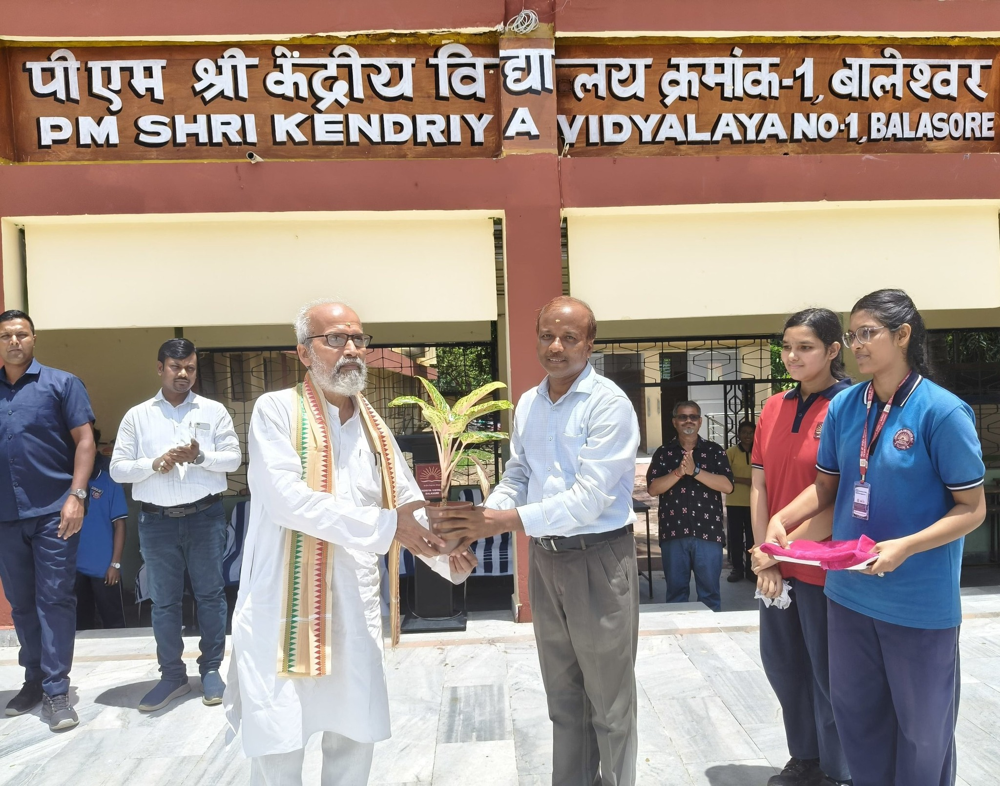
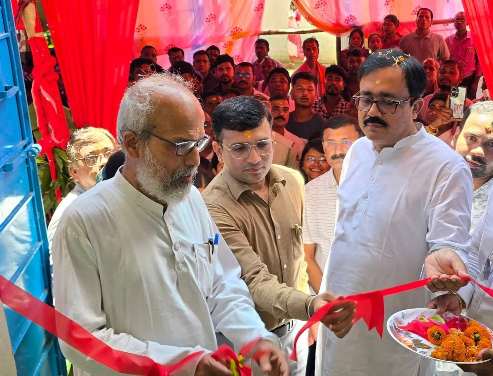
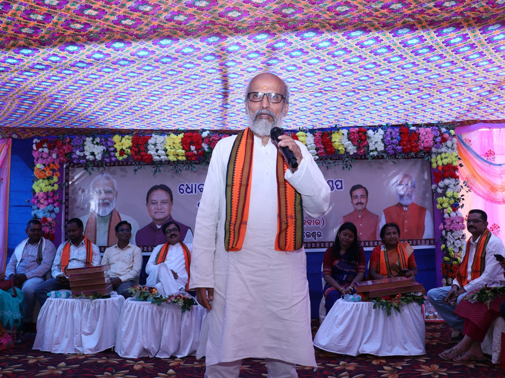

Pratap Chandra Sarangi (born 4 January 1955) is an Indian politician from Balasore, Odisha. He serves as a National Executive Member of the Bharatiya Janata Party (BJP) and a member of parliament from the Balasore Lok Sabha constituency in Odisha. He was the Minister of State in the Government of India for Animal Husbandry, Dairying and Fisheries and Micro, Small and Medium Enterprises (2019-2021) and a two-time member of the Odisha Legislative Assembly from Nilgiri (2004-2014). Sarangi was Odisha's state unit chief of the Bajrang Dal when Graham Staines, an Australian Christian Missionary, and his two minor children were burnt alive by the members of the right-wing outfit in 1999. Later he was involved in 2001 Odisha Assembly attack. Read More
Pratap Chandra Sarangi was born on 4 January 1955 in the village of Gopinathpur, Nilagiri, Balasore into a Brahmin family. He completed his bachelor's degree at Fakir Mohan College, Balasore under Utkal University in 1975. Since his childhood, Sarangi was a spiritual seeker. He wanted to become a monk of the Ramakrishna Math. He made several visits to Belur Math, the headquarters of the Ramakrishna Order in Howrah, West Bengal. The monks of the Math discussed with Sarangi about his desire and examined his biodata. They discovered that Sarangi's widowed mother was alive. They insisted that he should go back and serve her. After his return to his village, he became involved in various social activities and politics.

 






Emphasizing transparency, good governance, and sustainable growth, Modi's vision is inclusive progress for every citizen across the country.
Elected to 18th Lok Sabha.
Served as Minister of State for Micro, Small and Medium Enterprises (MSMEs) in the Government of India.
Member, Committee on Water Resources.
During our recent Parliamentary Standing Committee Study Tour, we had the opportunity to visit the Nimoo Bazgo Power Station, a 45 MW run-of-the-river project on the Indus River near Alchi village, approximately 75 kilometers from Leh..
üáÆüá≥ At Pragati Maidan, New Delhi, participated in the Har Ghar Tiranga Yatra organized by the Ministry of Culture and Tourism, Government of India, alongside Hon‚Äôble Union Ministers and Members of Parliament, reaffirming the resolve for service, unity, and integrity of Mother India
Today, it was a matter of fortune and pride for me to participate as the chief guest on the sacred stage of the Shri Siya Ram Leela Committee, Dwarka (Delhi). During this time, sharing thoughts on the divine episode of Sita's Swayamvar has been a unique and unforgettable experience in my life.
VYASA (Vivekananda Yoga Anusandhana Samsthana) is a renowned Bengaluru-based organization dedicated to promoting health and well-being through traditional Indian sciences.